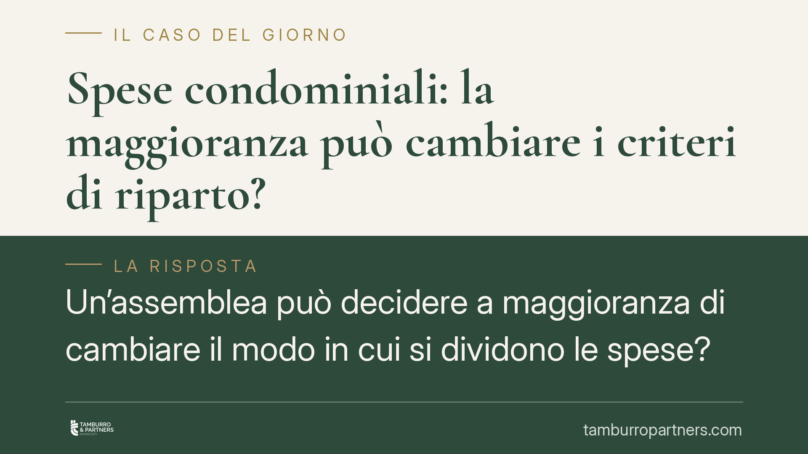

Spese condominiali: la maggioranza può cambiare i criteri di riparto?
Un'assemblea può decidere a maggioranza di cambiare il modo in cui si dividono le spese? La risposta della giurisprudenza è negativa: modificare i criteri di ripartizione in deroga alla legge richiede il consenso di tutti i condomini. Una delibera presa senza unanimità è radicalmente nulla, con conseguenze diverse dalla semplice annullabilità. Vediamo la distinzione e cosa comporta in pratica.

Il principio: i criteri di riparto non si cambiano a maggioranza
La regola di base è contenuta nell'art. 1123 del codice civile, che fissa i criteri legali di ripartizione delle spese condominiali: in proporzione ai millesimi di proprietà, salvo diversa convenzione. Quell'inciso – *salvo diversa convenzione* – è decisivo. Significa che i condomini possono adottare criteri differenti da quelli di legge, ma solo con un accordo che li vincoli tutti.
Ne discende una conseguenza precisa: una modifica dei criteri di ripartizione in deroga a quelli legali non può essere imposta a maggioranza. Serve l'unanimità, perché si incide su un diritto patrimoniale del singolo condomino, che non può vedersi aumentare la quota di spesa senza il proprio consenso.
Nullità o annullabilità: la distinzione che conta
Qui entra in gioco il discrimine fissato dalle Sezioni Unite della Cassazione con la sentenza n. 9839 del 2021, punto di riferimento in materia. La distinzione è la seguente:
- Delibera nulla: quando l'assemblea *modifica i criteri* di ripartizione in deroga all'art. 1123 c.c. senza unanimità. La nullità è radicale, può essere fatta valere da chiunque vi abbia interesse e senza limiti di tempo.
- Delibera annullabile: quando l'assemblea applica *male* i criteri esistenti – cioè sbaglia il calcolo o il riparto pur senza volerli cambiare. In questo caso la delibera è solo annullabile e va impugnata entro trenta giorni (art. 1137 c.c.), decorsi i quali diventa definitiva.
La differenza è sostanziale. Nel primo caso il condomino conserva la possibilità di contestare anche a distanza di tempo; nel secondo, l'inerzia consolida la decisione.
Secondo questa impostazione – oggetto di recenti pronunce della Corte da verificare nei riferimenti esatti – anche le transazioni firmate dall'amministratore in materia di riparto, senza un mandato unanime dell'assemblea, seguono la stessa logica: difettando il potere, l'atto non vincola i condomini dissenzienti.
Regolamento assembleare e regolamento contrattuale
Per orientarsi serve distinguere due figure.
Il regolamento assembleare è approvato a maggioranza e disciplina l'uso delle parti comuni e il funzionamento del condominio. Non può però derogare ai criteri legali di riparto.
Il regolamento contrattuale – richiamato nei singoli atti di acquisto o approvato all'unanimità – può invece introdurre criteri di ripartizione diversi da quelli di legge, proprio perché nasce dal consenso di tutti.
Esempio concreto: se il regolamento contrattuale stabilisce che le spese dell'ascensore gravano solo sui piani alti, quel criterio è valido e vincolante. Ma se un'assemblea, a maggioranza, decide di estenderlo a chi abita al piano terra, quella delibera è nulla, perché modifica un criterio consolidato incidendo sul patrimonio dei singoli.
Cosa non richiede unanimità
Per evitare fraintendimenti: l'unanimità serve solo per *cambiare i criteri*. Non è richiesta per le ordinarie decisioni di gestione. A maggioranza si approvano regolarmente:
- il bilancio consuntivo e preventivo;
- la ripartizione concreta delle spese secondo i criteri già vigenti;
- le delibere di manutenzione ordinaria e straordinaria;
- la nomina e la revoca dell'amministratore.
Sono atti di amministrazione, non modifiche dei criteri di riparto.
Cosa fare in concreto
- Leggere il verbale con attenzione: verificare se la delibera incide sui *criteri* di riparto (profilo di nullità) o solo sulla *loro applicazione* (profilo di annullabilità entro 30 giorni ex art. 1137 c.c.).
- Verificare il titolo del criterio contestato: controllare se deriva dalla legge, dal regolamento assembleare o da quello contrattuale, perché cambia l'ampiezza del potere assembleare.
- Rispettare i termini: per le delibere annullabili è opportuno attivarsi entro trenta giorni dalla comunicazione o dall'assemblea, evitando che la decisione si consolidi.
- Controllare i poteri dell'amministratore: verificare che eventuali transazioni o accordi sul riparto siano sorretti da un mandato assembleare adeguato.
- Richiedere una valutazione professionale: prima di impugnare o di astenersi dal pagamento, è opportuno far esaminare la posizione da un legale, perché il confine tra nullità e annullabilità non sempre è immediato.
Contributo informativo a cura di Tamburro & Partners – Avv. Giuseppe Tamburro. Non costituisce parere legale.
Ogni condominio ha una storia a sé.
Se gestisci un'amministrazione e vuoi un confronto su una specifica questione condominiale, scrivi allo studio. Ti rispondiamo entro un giorno lavorativo.